Metric per macOS
Un set di strumenti per tempo e frequenze per macOS, in una finestra e con metronomo integrato. Ricava i tempi di delay da un tempo, calcola rapporti FM e bande laterali, sincronizza un LFO al battito e traspone un campione, in una finestra ridimensionabile da tenere aperta accanto alla tua DAW. Supporta Siri, Comandi Rapidi e un widget del Centro Notifiche.
- Metronomo con tap tempo e battito visivo
- Convertitore BPM → ms / Hz (regolari, puntati, in terzina)
- Tabella nota ↔ frequenza (108 note, A4 = 440 Hz)
- Trasposizione e velocità, calcolatore FM, frequenze LFO, 32 armonici
- Tap tempo dalla barra dei menu, tempi di delay in ms o Hz, più metronomo e note
- Siri, Comandi Rapidi e un widget BPM per il Centro Notifiche
Screenshot
Gli screenshot in versione chiara e scura seguono il tema del sito.

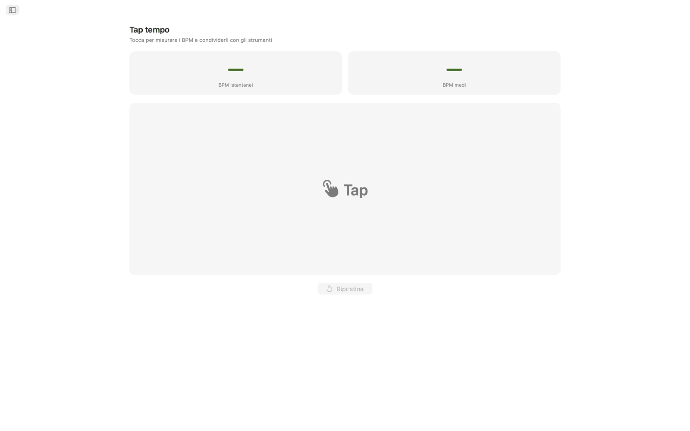
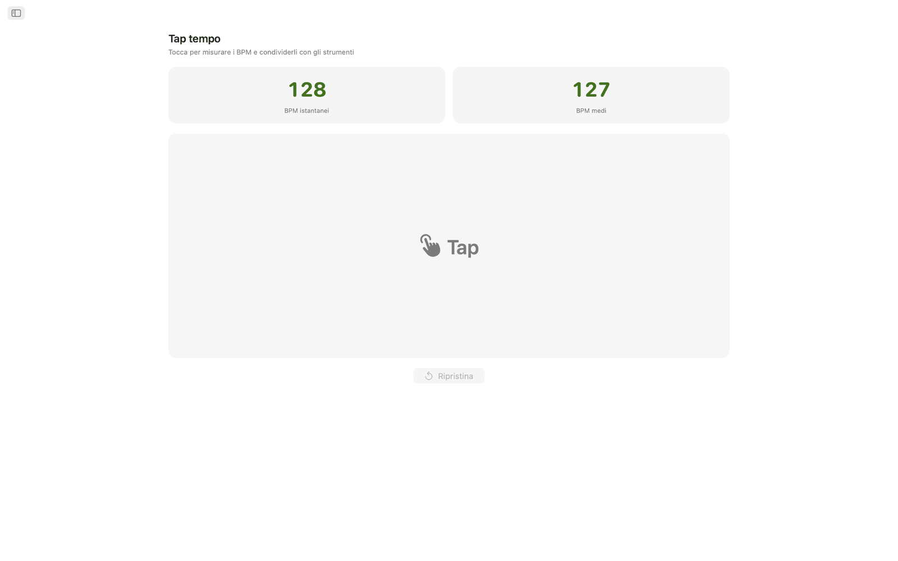
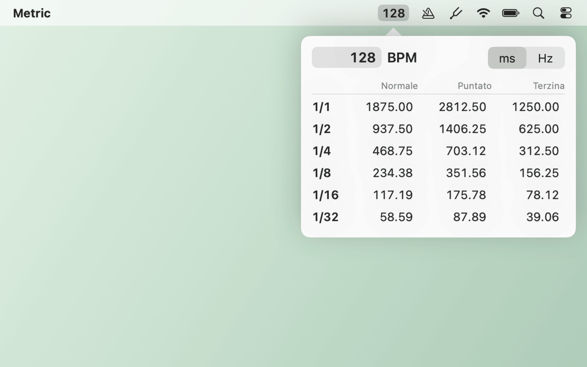
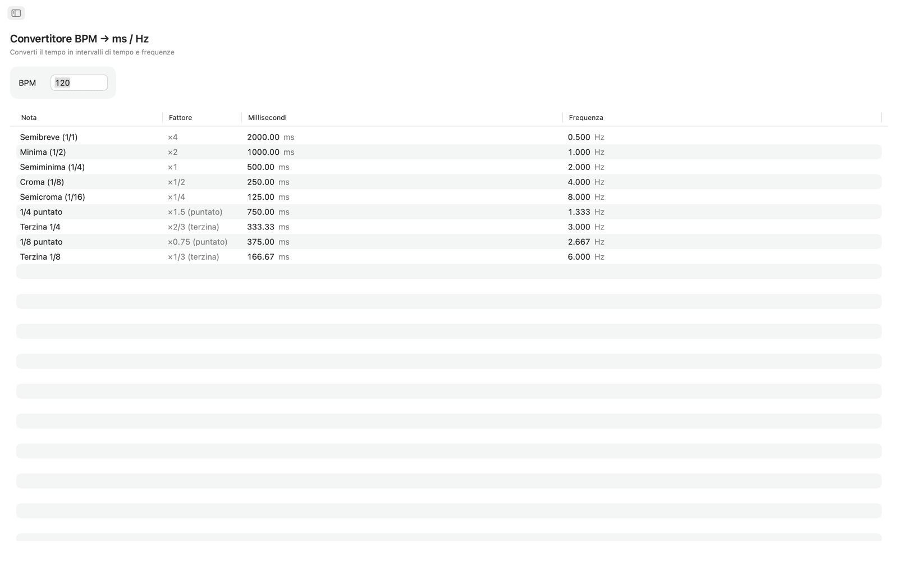
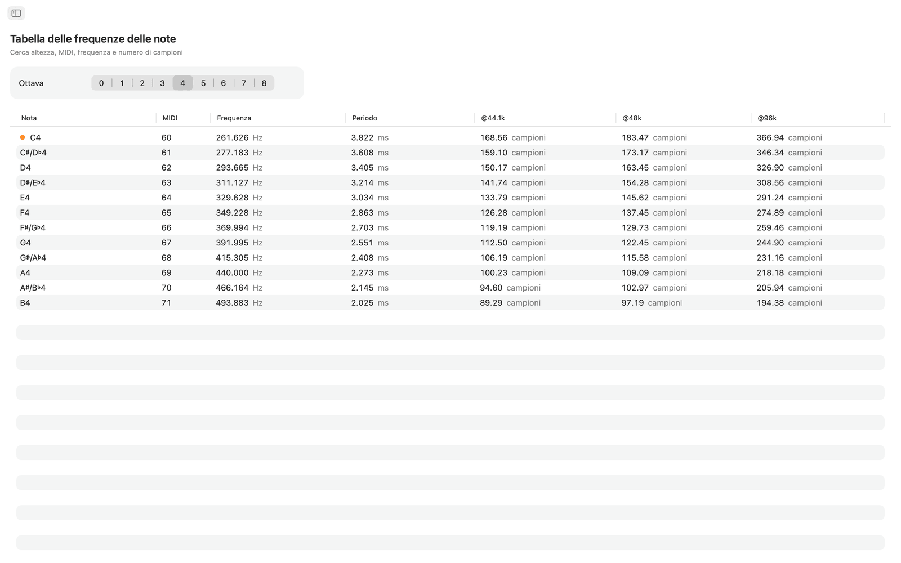
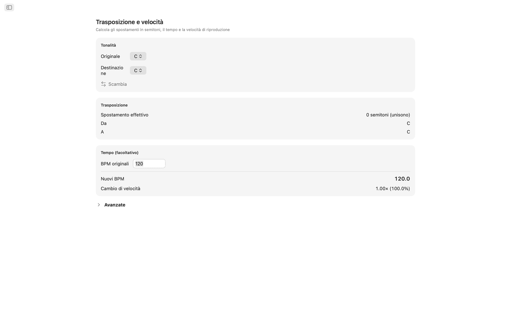
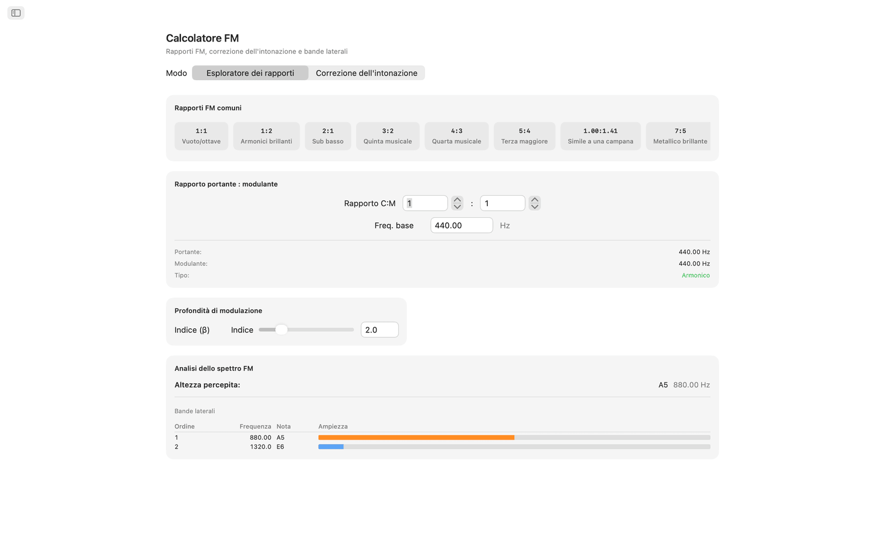
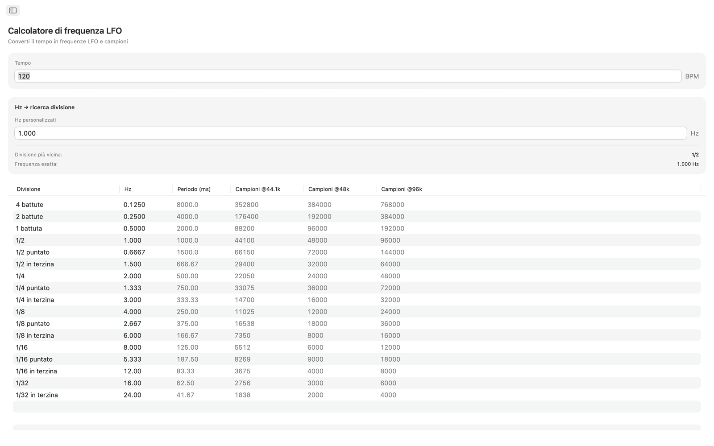
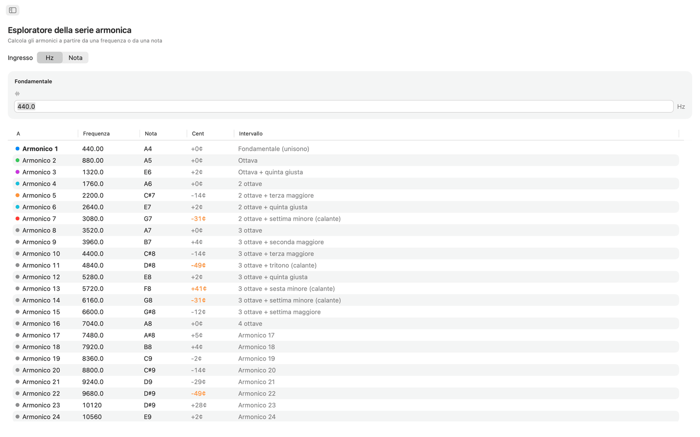
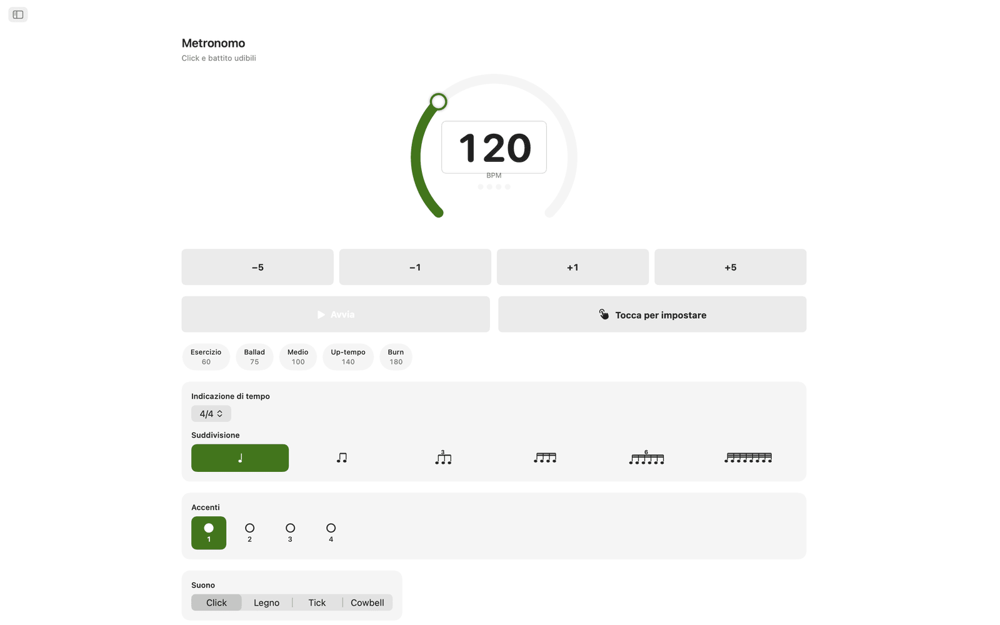
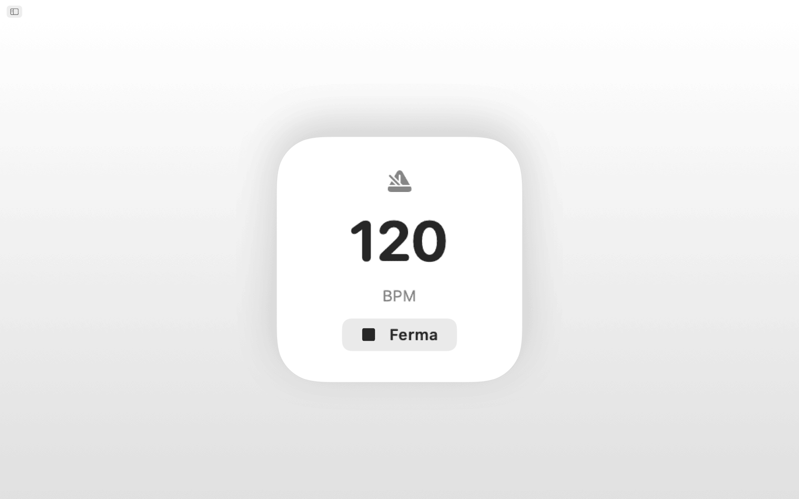
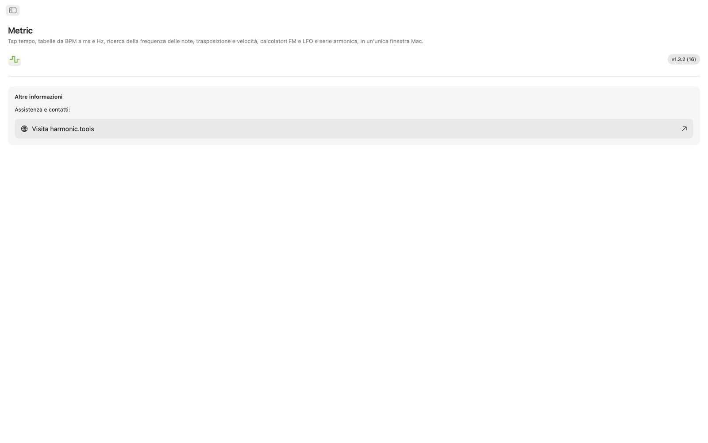
Funzioni
- Il metronomo ha un selettore del tempo, il tap tempo, le indicazioni di tempo, le suddivisioni e un indicatore visivo del battito.
- Fai clic sull'ampia area per misurare il tempo. Metric mostra il BPM dell'ultimo tocco e una media mobile fino a otto tocchi, e puoi inviare l'uno o l'altra a convertitore BPM, Trasponi o Frequenza LFO con un solo clic.
- Il convertitore BPM → ms / Hz prende un tempo e restituisce i valori regolari, puntati e in terzina per semibreve, minima, semiminima, croma e semicroma. Ogni riga mostra millisecondi e frequenza in Hz, così regoli delay, pre-delay del riverbero o sidechain senza calcolatrice.
- La tabella delle frequenze delle note elenca tutte le 108 note cromatiche da C0 a B8. Ogni nota mostra numero MIDI, frequenza in Hz, periodo in millisecondi e campioni a 44,1, 48 e 96 kHz. Il Do centrale è segnalato. Tutti i valori si basano su A4 = 440 Hz.
- Per trasporre, scegli una tonalità di partenza e una di arrivo per vedere lo scarto in semitoni, il nome dell'intervallo e il valore esatto di trasposizione per la DAW. Aggiungi il BPM originale e Metric calcola il nuovo tempo e il rapporto di velocità di riproduzione. Uno slider dei cents (±100) e uno della velocità su due ottave (±24 semitoni) permettono la regolazione fine.
- Il calcolatore FM ha due modalità. Esplora rapporti imposta i rapporti di portante e modulante da una frequenza di base e offre dieci preset FM, dalle ottave vuote (1:1) alle campane inarmoniche (1:π). Correzione dell'intonazione lavora al contrario: scegli una nota e ottieni le frequenze esatte di portante e modulante. Entrambe le modalità mostrano una tabella delle bande laterali con fino a dieci parziali, con frequenze, note più vicine e ampiezze colorate, guidate da uno slider dell'indice di modulazione.
- Il calcolatore di frequenza LFO converte qualsiasi BPM in frequenze LFO su 17 divisioni musicali, da quattro battute alle terzine di 1/32. Ogni riga mostra Hz, periodo in millisecondi e campioni per ciclo a 44,1, 48 e 96 kHz. La ricerca inversa prende un valore in Hz e trova la divisione musicale più vicina, con l'errore ben visibile.
- L'esploratore della serie armonica parte da una frequenza o da una nota qualsiasi ed elenca i primi 32 armonici con frequenza, nome della nota più vicina, scarto in cents ed etichetta dell'intervallo. Gli armonici di ordine basso sono colorati e gli scarti oltre 30 cents sono evidenziati, così il contenuto inarmonico risalta.
Tempo e intonazione condivisi
Batti un tempo una volta e convertitore BPM, Trasponi e Frequenza LFO usano tutti lo stesso BPM in tempo reale. Frequenza delle note, calcolatore FM e armonici usano tutti A4 = 440 Hz.
Siri, Comandi Rapidi e widget
Chiedi a Siri di avviare o fermare il metronomo, impostare un BPM, battere un tempo, convertire BPM in ms, trovare la frequenza di una nota o trasporre un tempo. Ogni strumento è anche un'azione di Comandi Rapidi, e il widget BPM tiene il tuo tempo nel Centro Notifiche.
Strumenti nella barra dei menu
Batti un tempo dalla barra dei menu senza aprire l'app. Clic destro per i tempi di delay in ms o Hz e per digitare un tempo qualsiasi. Metronomo e altezza delle note sono opzionali, e ci sono le impostazioni per la modalità solo barra dei menu e per l'apertura al login.
Sul desktop
- Funziona del tutto offline. Nessun account, nessuna pubblicità, nessun tracciamento
- App nativa per macOS con navigazione nella barra laterale
- Interfaccia che segue l'aspetto scuro o chiaro del sistema
- Campioni a 44,1, 48 e 96 kHz
- Finestra ridimensionabile. Tienila aperta accanto alla tua DAW
Accessibilità
Funziona con VoiceOver e Controllo vocale e si usa da tastiera, con i tasti freccia e la barra spaziatrice.
Metric è gratis per 7 giorni. Dopo la prova, l'accesso completo è un acquisto una tantum, senza abbonamento.